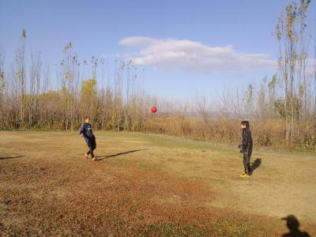

新年あけましておめでとうござりまする～。
今日は新年の初蹴りでもあり、活動２年目の初日でした。去年は初日は７名でしたが、今年は１４名と倍も参加があり、正月明けの忙しい中、本当に参加して頂きありがとうございます。また、今年も一緒に楽しいチーム作りに協力のほどよろしくお願いします。
年始から、僕のノートラップランニングボレー隼シュートが炸裂する予定でした（スガちゃん、わかるかな？）が、残念ながら元旦の時？の雪の影響で、普段メインでしている所は水だらけで、全体的にぬめっていたので、今日はゴールは立てずにミニゴール中心でしました。
最初は各自アップして、その後は鳥かごで体をあっためて、次にミニゴール２つ使って２対２をしました。
メインはミニゲームでした。ぬかるみとか避けて、駐車場と通路の方でギリギリでなんとか、コートを取りましたが、片側のサイドはやばかったですね～。
いつも通りコントっぽいのはありましたが、今日は柿さんが前ちゃんに見せたフェイント、逆えらしこ？っぽいのが偶然（本人は実力と言ってますが）炸裂して、前ちゃんもびっくりでしたね。でも本当に１年前に比べて上手になったなって思いました。下品さは超上達しましたが（笑）
あとは最初の方にテラさんとスガちゃんが同じチームが多くて、２人のダイレクトプレーに散々やられました。テラさんの動きが半端なくて、あんな体力が欲しいなって思います。でも、今日は手を抜いてくれたかもだけど、やっつけたった（笑）
今日の「な～に～、やっちまったなあ」は、まっとんでした。プレッシャーに強くなったのか、自らドリブル、ドリブル・・・、おおすげえ・・・ボテ（森ちゃん２号）（笑）、今年の初コケの称号おめでとうございます。ぜひ、お気持ちのコメントお待ちしてます。でも、本当に筋をやっちまったな～だったので、大事に至らないように早目に処置してくださいね。
んな感じで、今日は終わりました。
終わってから９名で、駅前のファミレスに行きました。机をくっつけてもらって、店の人にも気を使ってもらいました。
注文の時、みんな普通に○○って注文していったのに、去年の王将とは大違いで、めっちゃ偉そうに「姉ちゃん、姉ちゃん」って呼びかけて、注文も変更するという酷い行いをした方がいましたね～。その人とＷさんとで右側でいつもの下品なトーク、被害者、スケさんによっしゃん、巻き添えにまっとん（笑）。左半分では僕とかハマさんや寺さんとかでカツさんの物凄い武勇伝を聞いたりと真面目な話でしたのに、この差はなんだったんだろう（笑）
そんな感じでだべって楽しい時間を過ごしました。
来週は試合です。また待ち合わせ場所とかは一斉メールで連絡します。相手さん主催ですので、きちんと相手さんの進行に従って、節度ある対応をお願いしますね。あと、ユニとレガースは必須ですので、忘れないようにお願いします。（レガース無しは試合に出せません）
本日、参加された皆さんお疲れさまでした。
あと、詳細は一斉メールでお知らせしますが、来週もグランド代が必要になってきます。その都度、小銭で徴収していると大変ですので、部費制＋αに移行したいと思ってます。
提案として第二掲示板に記載しておきますので、もしどうしてもって意見があればお願いします。ただし、全員で意見が一致しない場合は多数決対応になりますので、その点はご理解願います。
よろしくお願い致します。
今日は今年最後の活動でした。歳末の忙しい中にもかかわらず、体験さんも含めて１５名の参加がありました。
このチームが立ち上がったのが今年の１月の第１日曜日（５日）、年も変わりますが、うちのチームにとっては今日で1年目が終わって、来月の４日から２年目を迎えるという大きな節目の日になります。
去年の９月頃からチームの創設のためにメンバーを募集して、しばらく待ってもらったりして１０人集まったので、今年の１月に初参加７名から始まったチームです。今では２８名になって、ユニフォームも出来て、対外試合も出来て、ほんと順調にチームとして一歩一歩進んできたんだなって思います。
それは、僕が頑張ったとかではなく、素晴らしいメンバーとともに作り上げてくることが出来たのが最大の理由だと思っており、ほんと感謝しています。反対にこんなちゃらんぽらんなまとめ役の僕についてきてくれてありがとうございます。まだまだ未熟ですが、今後も頑張っていきたいと思ってすので、来年もよろしくお願いします。
さて、今日の活動を報告しますね。今は雨が降ってますが、ちょっと冷たい風が吹いたりしてましたが、まずまずのお天気で楽しく出来たと思います。
２回目の体験参加のヒロさん、いかがでしたか？ほんと良く動いていたと思います。良かったら正式に入部して今後もボール蹴れたらいいなって思います。
今日は笑いはもちろんありましたが、とある人がお休みでしたので、お上品な感じで出来たかな？でも、この報告のネタがあまりなくてちょっと辛いですね（笑）。最初の日は物静かだったＫさんは、今やうちに欠かせないムードメーカーになってくれてます。
今日は最初は各自でアップして、その後、久々の参加のぞのさんに念願のユニフォームを渡して、それからは２グループに分かれて、とりかごして、それからシュート練習をしましたが、最初の方は、飛んで飛んで飛んでというまどかひろし状態でゴールに一切入らなかったですね（笑）、そんな状態の中、ポストしてて、変わってもらってからの僕の最初のシュート、その前に左下隅にイーグルシュートと豪語して、打ったらほんとその通りのボールが言って、僕自身が一番びっくりしました。その後は調子乗って、ま、いつもの通りですね（笑）。ちょうど、以前にテープで修正していた部分が完全にわれちゃって、僕はたぶんシゲさんの突っ込んだ影響と思うんだけど、スガちゃんから僕のシュートのせいにさせられちゃいました（涙）
その次はいつもよりゴールを前に出して、真ん中と左右に分かれて、真ん中からちょっとドリして左右のどちらかにパス、パスをうけたら、少し切り込んで中にクロス、真ん中の人がシュートという感じをしましたが、個人的には凄く楽しかったですね。今後もしていけたらと思ってます。
その後は５人、３チームで分けて、幻のブルービブも登場して、攻めと守りを交代でして、その後はミニゲでした。
ミニゲも今までで一番大きくコートを取ったかも？でも最近グランドでしたりもしているので違和感はなかったかなって思います。この時期は霜の影響で、滑りまくるのが辛かったです。
１５人なので７対８でしましたが、最初のチーム分けで明日もお休みの人とそうでない人とで分けたら３分の２がお休み・・・テンテケテンテテンテテンテン・・・チッキショー（涙）、思わずまっさん太夫炸裂しました。羨ましいいでっす（涙）
ネタはうーんやっぱり一番は森ちゃんかな、右サイドに居た森ちゃんへ強烈なパス、トラップと同時にボールを前に出して、相手をかわして、フリーで駆け上がる・・中を見て、いざクロスの用意・・ボテ（笑）、なんかなりそうやなってちょっと思ってたけど（笑）、その後しばらくボール触りたくないって言ってたのがおもろかったっす。さすが、いぶし銀ですわ。
あとはちょこちょとはあったけど、いつもみたいにＫネタがないのであんまり覚えてないっす。なんかゴールに森ちゃんとテラさんが絡まってこけてたなあ。個人的には結構、動けましたね。最後の試合で自陣のゴール前でボールを奪って、超直線ドリブル、後で聞いたら４人追いかけてきたみたいやけど、勝ちました～（笑）、でもその前とかボロボロやったしなあ。
来週は試合後にお昼ご飯を希望者だけで行きたいと思ってるので、また時間のある人はよろしくです（おごりじゃないっすよ～、わだっち）。今日はブラックごろうと愉快な仲間たちがプチ飲み会を夜にするみたいで、きっとくしゃみ止まらんわ（笑）
１月は１１日と２５日に試合で考えてます（２５日はまだ未定）、出席登録の方を早目にお願いしますね。
本日参加された皆さん、お疲れ様でした。
メンバーの皆さん、良いお年を。来年もよろしくお願いします。
また、よかったら今年の感想や、来年の抱負とかカキコしてくださいね。
昨日の雨によるグランド状態が心配でしたが、一方のゴール前はやばかったけど、あとはそこまで酷くなくて何よりでした。
今日は初めての人も多かったかもですが、場所が淀川河川敷、木屋元グランドでした。浜さんも１０年ぶりくらいとか言ってたっけ。僕も前に居たチームでは良く来てましたが、もう１年半以上ぶりだったので、久々感があって、ちょっと余韻に浸ってました。用水路によくボール落としたりしてたなあ（笑）
遅刻、早退を含めて、なんだかんだで最大で１８名の参加がありました。ほんと、歳末の忙しい中、参加ありがとうございました。
んで、当初は５試合くらいを考えていましたが結局４試合になりました。最初は８対９で１５分しましたが、チーム分けは血液型で分けました（笑）、Ａ型とＯ型は多いのは予想できましたが、ＡＢ型とＢ型も同じくらいで、結局Ｏ型とＡＢ型 対 Ａ型とＢ型でしました。まあ、アップ程度で和気藹々と出来た感じがします。ヤスさんがシゲさん２号の味方のバックパス手で取って、間接フリーキックからゴールが決まりましたね。ヤスさんがその後の試合でも相手からのボールも絶対に手で取らなかったのがおもろかったですね。
２本目と３本目は１８人になったので、キーパーフリーで９対９で２０分、前後半をしました。
メンバーは
Ａ（まっさん、スケ、わだっち、ごりん、かっきー、ごろう、かつ、よっしゃん、タツヤ）
Ｂ（テラ、ヤス、ハマさん、まえちゃん、わっち、よっしー、シゲ、はまっち、スガ）
一本目はＡチームが２点取りました。1点目は、ごろうさんから、ごりんさんへ、ごりんさんが縦パスで走りこんできたたっちゃんへ、たっちゃんが中に折り返して、かっきーがごっつあんゴールでした。２点目は、経過がわかんないけど、ゴール前でかっきーがテラさんと１対１してて、取られそうになってとりあえず蹴ったら入ったみたいな感じでしたが、なんか情報によればかっきーがテラさんの胸ぐらをつかんで脅してその間にボール蹴ったとか（笑）。テラさん、詳細情報よろしくでっす。
後半はＡチームが１点、Ｂチームが３点で結果的には引き分けになりました。Ａチームの１点は、サイドからごろうさんが中にいれて、スケさんがヒールで流して、ゴール前に居た、かっきーがまたもやごっつあんで、なんとハットトリックでしたね。ごっつあんのやり方を柿さん、みんなに教えてくださーい。
Ｂチームの３点は、１点目がゴール前でスガちゃんが強烈なシュートを近距離でたっちゃんが正面で止めてくれたけど、威力があって、跳ね返ったところを前ちゃんが冷静に決めました。２点目は、よっしーがサイドからパスして、走りこんできてたテラさんが正面で受けて、そのままシュートでした。３点目は今度はテラさんからのパスをわっちが決めて同点で終了しました。
まあ、キーパーフリーじゃなかったら１対１くらいやったかな（笑）、それとは別によっしゃんの幻のゴールが２本ありましたが、あまりにもクロス失敗的な感じで無人のゴールだったので（笑）、お子さんの前でお父さんいいところ見せれたかな？
んで、その後にハマさんが、いかがわしい人と待ち合わせ？で早退になったので、全員グッパーで３０分くらいの長丁場でゲームしました。
絶好調だった柿さんがオチで顔面にボールくらって、目に砂が入った？のか、その後はあまり動けなくなって、外で様子見の度にたっちゃんがビブを脱いで、柿さんの代わりをしてくれて、最期の方はテラさんが完全移籍をしてくれました。
最後は得点も入ったけど、覚えてないや（笑）
ゴール役をしてくれた、はまっちが、有明海のムツゴロウのように泥のところを這うようにゴールを守ってくれてたり、スガちゃんがゴール前で大転倒してドロドロになったり（最後の試合じゃなかったかな？）、シゲさんが限界を超えて転びまくったりでしたが、一番のプレーは、テラさんからの絶妙なクロスに飛び込んできたごろうさん、タイミングもドンピシャ、ヘディングでやられたって思った瞬間、チキってくれて結局、ボールは素通り（笑）。ごろうさんの弁解をお待ちしてます。
個人的にはバックが多かったのであんまりしんどくなかったけど、攻めた時には、ほんとボロボロ、シュートを外しまくるは、クロスは明後日の方向に行くはで、泣きそうでした。
まあ、こんな感じでケガもなく、楽しい時間を過ごせました。
来週は蹴り納めになりますので、参加出来る方はよろしくでっす。
本日、参加された皆さんお疲れ様でした。

今日は昨日とは違って、風があまり吹かなかったけど、それでも時折風も吹いてたし、底冷えしましたね。
僕の手袋が行方不明、誰か見たことない手袋見かけたら連絡よろしくです。手が冷たかった（涙）
今日は早退を含めて、１４名の参加でした。１１時に早退が２名いたので、寒さもあってミニゲの時間を多くとりました。
最初はパス回しから、とりかごでＵＰして、その後はドリブルシュートして、いつもならセンタリングとかするんですが、今日は入れ替わりの激しい、４対３をして温もったうえで、最初は７対７で大きめにコートを取ってミニゲしました。
いつも通り、おもろいことばっかりでしたが、一番は、前ちゃんから柿さんへパス？、柿さんが取れずに「今の俺へのパス？」って聞いたら「テラさんあて」っていきなり言われて（実際はたぶん柿さんへのパスだと思います）、その直後にテラさんが岩のところでずっこけて、柿さんが「そんなんで笑い取るのずるいわ」って突っ込んでたら、今度は反対側のロープのところで、森ちゃんがロープに引っかかって大ごけ、結局柿さんはおいしいところを全部取られたあげく、最期にたっちゃんにボールを顔にぶつけられて天罰を食らってました（笑）
それにしても森ちゃんは最後の試合でも豪快にこけてましたね、ケガなかったが心配です。まあ、僕も思いっきり滑ってこけて、膝から流血してたから人のこと言われないけどね。（笑）
今日は、ボールが肩にあたったのになぜか顔面ブロックしたと思われて、とある人から「石崎君」と呼ばれてへこみました。わだっちも超ドフリーなシュートを外して、怒られてましたね。とある人は名前が出すぎているので、省略です（笑）
２人が早退してからはコートを縮めて、６対６をして、１２時過ぎに終わりました。
来週は紅白戦になりますので、出来るだけ多くの参加のほど、よろしくお願いします。
ちなみに画像は、愛を語り合っている二人の大切な時間です（笑）、基礎練習らしいですが、まあコントにしか思えんかったけどね。
本日参加された皆さん、お疲れ様でした。
12月28日午後6時から京橋でみんなで飲みましょう！
現在、ワダッチ、グッさん、スガちゃん参加確定です。スケジュールへの書き込むをお願いします！
ちなみにカッキーはデートで不参加です。
皆様こんにちは。 ７日の練習に体験参加させて頂きました廣瀬と申します。
６年ぶり位でスパイク履いて５号球蹴って、とても楽しませて頂きました。
練習に来られていた皆さんが非常に和やかにプレーされているのを拝見して
また参加させて頂きたいと思いました。 次回も宜しくお願い致します。
追伸
下半身が筋肉痛で大変です！？ ASIMO状態で歩いています。。。
今日は寒かったなあ。練習終わるくらいにちょっと太陽が出てきてさ・・・。
そんな天気の中でもさすがに先週ほどじゃないけど、体験参加さん入れて１１名の参加がありました。
今日はオーソドックスなメニュー（メニュー募集中です）でパスでアップしてから、ポストシュート、センタリングシュートって感じで、わだっちがいいヘディングしてたのが印象的でした。
その後は久しぶりに○○会ＴＶ しようと思って、マーカー並べたんだけど、始まってからマーカー完全無視（笑）、とっぱらって、５対６（キーパー１名）でしました。
その後はミニゲの時間を多くとりました。
ゲームの内容はいろいろといいプレーもありましたね。森ちゃんの後ろ回し蹴り？クリア、スガちゃんのモモトラップパスからごろうさんがこけそうになってた時にたまたまボールが頭に来て、ゴールなったみたいな？とかあったりで、最期はまっとんがプレッシャーに負けず、ゴールを決めて終わりました。
今日はゲームよりは、柿右衛門が変なポーズ（ニャンコ？？）あみだして、てっきりフェイントにでも使うのかなっと思ってたら、ミニゲで得点決めた時の、喜びのポーズやったらしく、一番後ろにいた、ごりんさんに駆け寄って、ポーズを強要？、なんか変な２人になってました。
さすがに２度目は拒否ってましたが、ごりんさんも柿右衛門一派になってきたって感じですね（笑）
あれは何なんだろう、柿右衛門が動画か写真で説明してくれるはず。
なので、ゲームというよりはお笑い道場みたいないつもと変わらぬ感じでした。
体験参加のひろさん、いかがでしたか？また良かったら参加してくださいね。スガちゃん、足は無理したらあきまへんでぇ。
参加された皆さん、お疲れ様でした。
今後について、グランドを１２月、１月と取れてますが、特に１２月は試合相手を探している段階です。同じような趣旨のチームで考えていて、年齢も考慮するとなかなか見つからない現状もあります。努力はしますが、グランド＝対外試合にならない場合もありますので、ご理解願います。
また、試合の時は出来るだけ早く、あくまでも予定でいいので出欠登録お願いします。未定でもコメントに〇〇％とか入れておいてもらっても構いません。
ご協力よろしくお願いします。
参加予定でしたが、仕事で参加できませんでした。
次回は参加させてください。。いいなぁ。たのしかったんやろなぁ